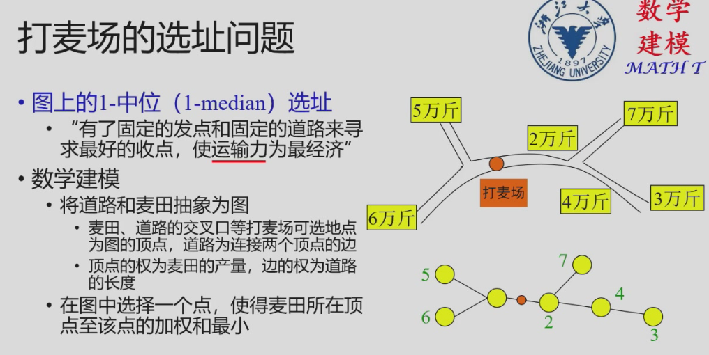
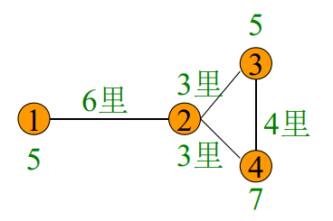
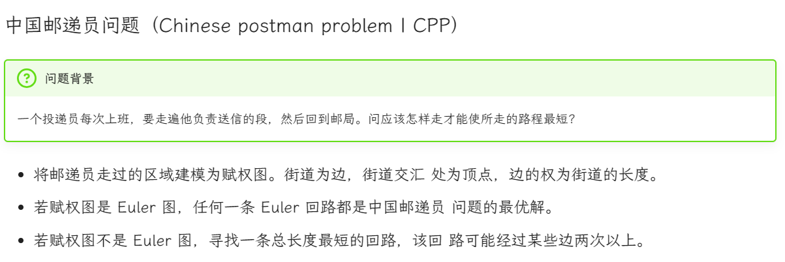

2. 图论模型
约 1370 个字 10 张图片 预计阅读时间 5 分钟

Putnam 2012B3
引理1：任取\(m\)天，必有至少\(m\)支队在这\(m\)天中至少获胜一场
Proof.
- 任取m支球队
- 如果不合要求，则一定有\(\geq1\)个队伍不合要求，该队伍在\(m\)天全输\(\rightarrow\)，它的 \(m\) 支队伍符合要求
抽签问题：要保证当下抽签的选项中存在==完美匹配==
打麦场问题

- 道路无回环（圈），抓各端（叶子），最小的进一站。

进一站→删除运算
打麦场设在5
Proof.
从简单到复杂...
- 若只有两站，建在少的那里
- 若大于两类：

- 分类讨论：
- 若在1、2之间，则，都需要通过2进行运输，则对于除了1、2之外的麦子，可以分成two step:
- 其他麦子运到2
- 1和2再进行运输
- 此时化归到第一种情况，即运到麦子更多的那个，所以必然是在2建站，从而满足了最小的进一站
- 若不在①处或①②之间建场， ①的麦子进入麦场必经过②，则可以将1，2合并，则满足了最小的进一站
- 道路有回环，每圈甩一段；化为无回环，然后照样算；甩法有不同，结果一一算；算后再比较，最优可立断。

七桥问题：
Background.
有七座桥梁建在河上，是否有一条从城中某处出发，经过每座桥梁恰好一次，最后回到出发点？
Step1: 桥作为顶点/桥作为边
Euler图：
经过图的所有边恰好一次的闭迹是Euler回路；存在Euler回路的图为Euler图。充要条件是图中没有奇度顶点!
建模：以河流分割而成的城市区域为顶点，桥梁为边，边的端点为该桥梁连接的两片区域。七桥问题等价于在该区域里寻找一片闭迹。
中国邮递员问题：


赋权图不是Euler图，则寻找一条总长度最短的回路，该回路可能经过某些边两次以上

Ramsey 数

定理 1.1 (Ramsey). 对任意正整数 s, t, 存在正整数 N, 使得完全图 \(K_N\) 的任意二染色 (下文中均指红蓝二染色) 必包含红色 Ks 或蓝色 Kt. 这样的最小的正整数 N 记为 R(s,t).
割
- 定义：设\(S \subseteq V\)为图\(G=(V,E)\)顶点集的任一子集，\(\overline{S}=V \setminus S\)边集\((S,\overline(S))\)称为\(G\)的割.
-
【通俗来讲】，图G上的一点连出去的一条边
- 若\(G\)为无向图：\(S-\overline{S}\)
- 若\(G\)为有向图：\(S\rightarrow\overline{S}\)
- 赋权图中割的权之和是割量
- 割量最小的割是最小割
- 割量最大的割是最大割

-
网络流
-
有向图\(N=(V,A)\)
- 以\(v\)为起点和终点的弧的集合分别记作\(v^+,v^-\)
- 定义：
- 对任一弧\(a \in A\), 其容量为非负数\(u(a)\),费用为数\(c(a)\)
- 对任一顶点\(v \in V\), 平衡量是\(b(v)\)
- \(\sum_{v\in V}b(v)=0\)
- 网络流：对任一弧\(a \in A\)， 流经弧\(a\)的流量为非负数\(f(a)\)
- 弧容量限制：\(f(a) \leq u(a)\)
- 顶点容量限制：\(\sum_{a\in v^+}f(a)-\sum_{a\in v^-}f(a)=b(v)\)
- 最小费用流
- 求\(\sum_{a\in v}f(a)c(a)\)最小的可行流
- 最大流
- 除顶点\(s,t\)外，其余顶点的平衡量为0【输入量等于输出量，达到平衡】
- 求顶点\(s\)平衡量的最大值，即网络中从\(s\)到\(t\)的最大流量
- 最大流最小割定理
- 任一网络中，最大流量等于最小割量
Tip
最大割的数学规划
\(x_i=\begin{cases}1,v_i \in S\\-1, v_i\in \overline{S}\end{cases}\)
Explanation:
| \(u_i \in S\) | \(v_i \notin S\) | 1 |
|---|---|---|
| \(u_i \notin S\) | \(v_i \in S\) | 1 |
| \(u_i \in S\) | \(v_i \in S\) | -1 |
\(\sum\sum w_{uv}x_u x_v\) 其中，\(w_{uv}\)是权值,\(x_u \in \{-1,1\}\)
欧拉图
self-learning from oi-wiki
定义：
- 欧拉回路：通过图中每条边恰好一次的回路
- 欧拉通路：通过图中每条边恰好一次的通路
- 欧拉图：具有欧拉回路的图
- 半欧拉图：具有欧拉通路但不具有欧拉回路的图
性质：
- 欧拉图中所有顶点的度数都是偶数
Proof.
因为欧拉回路的要求是走遍所有边恰好一次，不难发现，所有点的“进出”次数应该是一样的（出和入是对应的，一定会成对出现），也就是度数都为偶数。 因此若图 G 存在欧拉回路，则图 G 一定连通且所有顶点度都是偶数。
- 若\(G\)是欧拉图，则它为若干个环的并，且每条边被包含在奇数个环内。
判别法
- 无向图是欧拉图当且仅当：
- 非零度顶点是连通的
- 顶点的度数都是偶数
- 无向图是半欧拉图当且仅当：
- 非零度顶点是连通的
- 恰有 2 个奇度顶点
- 有向图是欧拉图当且仅当：
- 非零度顶点是强连通的
- 每个顶点的入度和出度相等
- 有向图是半欧拉图当且仅当：
- 非零度顶点是弱连通的
- 至多一个顶点的出度与入度之差为 1
- 至多一个顶点的入度与出度之差为 1
- 其他顶点的入度和出度相等